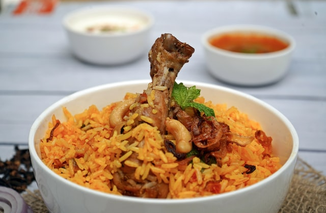

Biriyani

Biryani is a popular South Asian mixed rice dish that originated in the Indian subcontinent, but has now spread to other parts of the world. It is typically made with basmati rice, meat (chicken, beef, goat, or lamb), spices, and sometimes, vegetables or fruits. The dish is typically cooked in layers, with the rice and meat being layered with spices and other ingredients to create a rich, aromatic flavor.
The preparation of biryani varies depending on the region and the recipe being followed, but some common ingredients include onions, garlic, ginger, chili peppers, coriander, cumin, turmeric, cardamom, cinnamon, and bay leaves. Some recipes also call for saffron, which gives the rice a distinctive yellow color and a subtle floral flavor.
Ingredients
- Basmati rice
- Meat (chicken, beef, goat, or lamb)
- Onions
- Garlic
- Ginger
- Green chilies
- Tomatoes
- Yogurt
- Lemon juice
- Whole spices
- Ground spices
- Saffron
- Ghee or oil
- Salt
- Water or broth
- Fried onions (optional, for garnish)
- Nuts and raisins (optional, for garnish)
Steps
- Wash the basmati rice in cold water until the water runs clear. Soak the rice in water for 30 minutes, then drain and set aside.
- In a large pot or Dutch oven, heat the ghee or oil over medium-high heat. Add the onions and fry until golden brown, stirring occasionally.
- Add the garlic, ginger, and green chilies (if using) and cook for a few minutes until fragrant.
- Add the chicken or meat and cook until browned on all sides.
- Add the tomatoes and cook until they are soft and pulpy.
- Add the yogurt, lemon juice, and spices (turmeric, cumin powder, coriander powder, garam masala, cardamom, cinnamon, cloves, and bay leaves) and stir well to combine.
- Add the soaked rice and stir gently to combine with the meat and spices. Add the water or chicken broth and salt to taste.
- Bring the mixture to a boil, then reduce the heat to low and cover the pot. Cook for about 20-25 minutes, or until the rice is fully cooked and all the liquid has been absorbed.
- Turn off the heat and let the biryani rest for 5-10 minutes. Fluff the rice gently with a fork and transfer to a serving dish.
- Garnish with fried onions, nuts, and raisins, if desired, and serve hot with raita or a side salad.